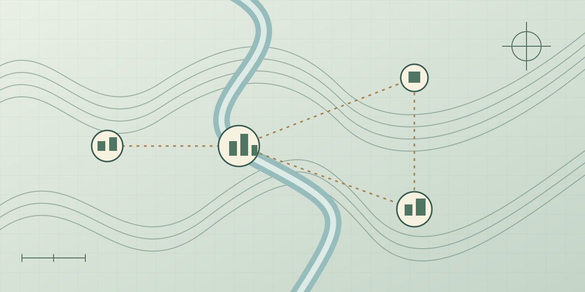

Imagined-world strategy · Concept direction
Creators
A world of your making.
A culturally neutral, multilingual counterpart to Sanguo3D. Similar strategic foundations, but an imagined setting and a focus on what players choose to build.

01 · The project
A world of your making.
Creators begins with a different question: what if a strategy world did not ask players to inherit an existing culture or retell a familiar history, but gave them room to build their own?
It can be understood as a culturally fictional counterpart to Sanguo3D. The broad style of strategy is related, but historical kingdoms and established characters are not the centre of the experience. Player-led building is.
The aim is a culturally neutral, multilingual game. Neutrality here describes the intended fictional setting and approachable presentation, not a claim that design can have no cultural influences at all.
02 · Reading room
Building without an inherited history
This project’s reading room concerns design rather than dynastic history. Its starting principles are:
- Build first. Let the player’s choices give the world its character, rather than prescribe a historical role.
- Explain across languages. Names, concepts, and interface structure should make sense without prior knowledge of the Three Kingdoms.
- Separate the setting from the strategy. Related gameplay foundations need not imply the same cultures, narrative, or visual symbols.
The planning-sheet image is a simple site illustration. Its contours and settlement shapes suggest construction and connection without standing in for final game art.
03 · Workshop
A distinct design direction
Creators is a distinct development direction, not an announced playable mode of Sanguo3D. Shared ideas can reduce duplicated work, while its player-building focus and fictional setting need their own design decisions.
Specific building systems, supported languages, platforms, and a release schedule have not been committed to on this site. The current priority remains completing the Three Kingdoms work.
Related, not interchangeable: Sanguo3D is rooted in Three Kingdoms history. Creators is intended to be understandable without that cultural starting point.
04 · Creators
Downloads & availability
No installer or public test build is listed for Creators. Multilingual support is a design goal, not a statement that localized builds are already available.
Public build
Creators is a separate concept direction. No playable release, test link or supported-language list has been announced here.
Not yet available